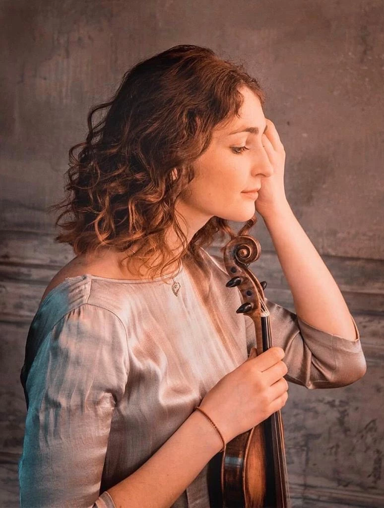

Oksana Pinchuk
Oksana Pinchuk, violinist, mother of three children.
Studied in Kyiv (master of modern violin, 2014)
and Cologne (master of baroque violin, 2023).
Oksana participates in symphonic projects, sometimes as concertmaster,
as well as in historically informed projects,
and she is also a teacher of violin and viola.
Since January 2024 - in Tango A Quartet.
